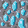

Ore Humter(オー ハンター)

使用したソフト・言語
Ｃ＃言語
Unity
visual studio
Aseprite
Github
SourceTree
制作期間：２か月間
制作人数：３人(プログラマー３名)
なぜこのゲームを作ったか・こだわったところなど
このゲームは、鉱石を掘りお金を稼ぐゲームです。このゲームは一人ではなくチームで制作しました。
自分は、マップを担当したので鉱石をランダムに配置したり鉱石を黒いタイルを使って隠す処理の実装
などを行いました。自分がこだわったところは、鉱石が種類ごとに固まって配置されるようにしたことです。
地面や鉱石などのイラストは自分がドットを打ちました！


このチーム制作を通して学んだこと
このチーム制作を通して学んだことは、チームの皆さんとコミュニケーション取ることの大切さです。
自分は、自分の技術力はあまりないと思っているので、相談をたくさんするようにしました。
そのおかげで、アドバイスをもらうことができ、順調に制作を進めることができました。
また、チームの方との連携がうまく取れずにトラブルを起こしてしまうこともあったので、
トラブルを防ぐためにもコミュニケーションは大事だと感じました。